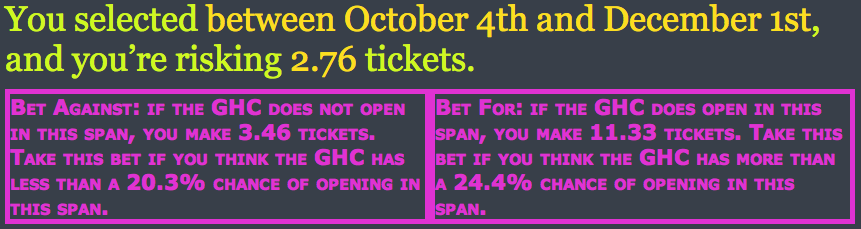
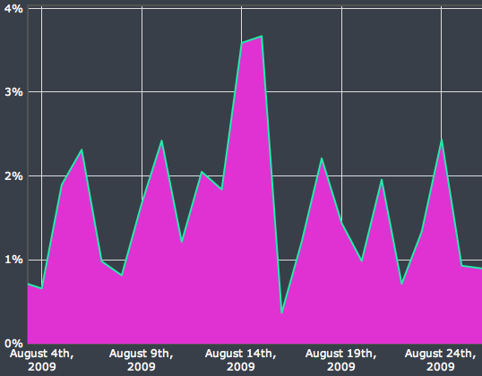
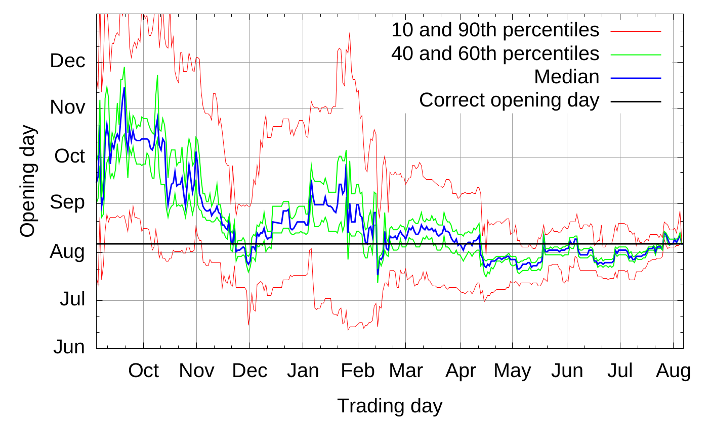
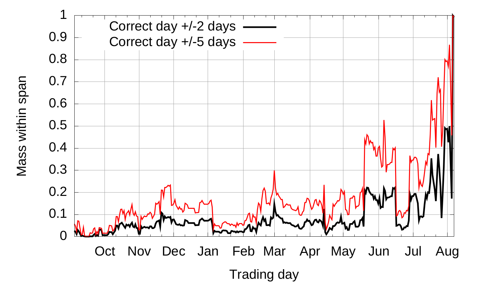

Introduction
Traditionnellement les marchés sont organisés en double enchères continues, ce système permet la mise en relation des ordres aux prix désirés par les participants. Cependant ce systeme est sensible au problème de double coincidence des besoins notamment sur les marchés peu liquides, une manière de contourner ce problème est de passer par un intermédiaire.
Ce dernier peu mettre en relation les ordres de ses differents clients ou trouver des contre-parties comme c'est le cas avec les courtiers. Les intermédiaires peuvent également se porter eux même comme contre-partie et ainsi prendre les ordres, gérant ainsi leur propre portefeuille créant ainsi de la liquidité sur le marché. C'est actuellement le cas sur le NASDAQ ou le NYSE avec des spécialistes qui gèrent leur portefeuille et proposent des prix plus justes que les agents non spécialisés. Cela permet, sur les marchés peu liquides, de réduire le tatonnement vers le prix d'équilibre et ainsi augmenter le nombres d'échanges.
Cependant il existe certains marchés, appelés "marchés fins" (thin markets), ou le nombre d'acheteurs et de vendeurs est tellement faible qu'aucun des acteurs ne pense trouver une contrepartie et donc aucun n'entre sur le marché. C'est notamment le cas pour les marchés de l'information qui permettent des ordres composés de plusieurs actifs simultanément, complexifiant la mise en relation des ordres. Une solution à ce problème est d'utiliser un animateur de marché automatisé, il s'agit d'un intermediaire contrepartiste toujours disponible à l'échange rendant le marché entièrement liquide.
Ce projet présente une implémentation d'un animateur de marché automatisé. Dans une première partie nous nous interesserons aux fondements théoriques des animateurs de marchés et à la programmation asynchrone. Tandis que dans un second temps nous présenterons l'architecture et l'implémentation du serveur de marché.
Animateur de marché automatisé
Les animateurs de marché automatisés sont des intermédiaires contrepartistes toujours disponibles à l'échange suivant une procédure automatique de formation du prix d'achat et de vente (qui peuvent être identiques). De cette manière, aucun vendeur ou acheteur ne doit attendre l'arrivé d'une contrepartie éliminant une partie du problème de double coincidence des besoins. Evidemment, la procédure automatique n'assure pas forcement un profit à l'organisateur mais assure un gain de liquidité non-négligeable sur certain marchés.
Cette partie présente les fondements théoriques des animateurs de marché automatisés, avec dans un premier temps les propriétés désirables des fonctions de coût utilisées par les animateurs. Et enfin, nous présenterons l'expérience "Gates Hillman Prediction Market" menée par Abraham Othman et Tuomas Sandholm à la Carnegie Mellon University.
Mesure du Risque
Le but des animateurs automatisés est de déterminer un prix juste en utilisant les informations des agents sur le marché, lui meme étant non-informé.
Règle de score de marché
Tout d'abord nous définissons une règle de score. Considérons deux variables aléatoires \(Y: \Omega \mapsto X\) et \(G: \Omega \mapsto Z\), ou respectivement \(Y\) et \(G\) sont les probabilités visées par l'estimation et les probabilité générés par l'estimation. Une fonction de score est définit par \(S: Y \times G \mapsto \mathbb{R}\). Autrement dit il s'agit d'une fonction mathématique associant à un ensemble de probabilités estimés un nombre que l'on peut interpreter comme la "justesse" de l'approximation. On considère que le point qui minimise la fonction de score est celui ou les probabilités se rapproche le de l'évènement réel.
Avec une règle de score, les agent rapportent leurs probabilités pour chaque évènement et recoivent un paiement selon chaque réalisation. Une règle de score de marché est une règle de score ou tout le monde peut changer ses choix à chaque instant et recevoir un paiement dependant de son estimation finale. Le cout induit par la règle de score de marché est celui de la dernière estimation rapportée, comparée à la première. Dans Hanson (2002) l'auteur montre que toute fonction de score rapportant des probabilités honnètes peut être utilisé comme règle de score de marché.
Animateurs de marché à fonction de score
Nous décrivons désormais le déroulement des échanges avec un animateur de marché automatique à fonction de score. Ce dernier commence avec un état initiale (généralement \(\vec{0}\)). Les agents interagissent avec l'animateur en modifiant son état interne de \(x\) à \(x'\) pour un prix de \(C(x') - C(x)\). Par exemple pour des évènement indépendants et complémentaires \(\omega_1\) et \(\omega_2\) et un état initial de \(\{0, 0\}\) si un agent souhaite acheter deux titres associés à \(\omega_2\) il devra d'affranchir de \(C(\{0, 0 + 2\}) - C(\{0, 0\})\). Ainsi on peut qualifier le prix d'un actif comme le gradient de la fonction de score par rapport à cet actif.
Propriétés désirables des fonctions de score de marché
Il existe un ensemble de propriété désirables pour ces règle de score, en effet on aimerait limiter la perte d'un animateur de marché et proposer des prix cohérents. On liste cinq propriétés désirables:
1. Monotonie
\[\forall x,y \space s.t. \space x_i \le y_i, \space C(x) \le C(y)\]
Interprétation: le prix marginal d'un ordre ne décroit jamais, empechant d'acheter des combinaisons à prix 0 en faisant des gains.
2. Convexité
\[\forall x,y \space and \space \lambda \in [0, 1] \] \[C(\lambda x + (1-\lambda) y) \le \lambda C(x) + (1 - \lambda) C(y) \]
Interprétation: une annonce diversifié donne un score plus faible que deux annonces séparés. Ainsi cela incite à la diversification des portfeuilles.
3. Perte borné
\[\sup_x[\max_i(x_i) - C(x)] \lt \infty \]
Interprétation: permet d'assurer une perte borné peu importe les actions des agents et les états réalisés.
4. Invariance à la translation
\[\forall \vec{x},\alpha \] \[C(x + \vec{1} \alpha) = C(x) + \alpha \]
Interprétation: Si on pari \(\alpha\) unités sur tous les états on paie \(\alpha\) unités.
5. Homogénéité positive
\[\forall \vec{x},\gamma \gt 0\] \[C(x \gamma) = C(x) \gamma \]
Interprétation: Si on double son pari on paie double.
Impossibilité du résultat
D'après ces propriétés il est possible de prouver qu'il n'existe qu'une fonction qui les statisfait toutes et il s'agit de la fonction de score max:
\[ C(x) = \max_{x_i} x\]
Cependant cette fonction implique qu'il est gratuit de déplacer l'animateur de marché d'un état \(\{1, 0\}\) à l'état \(\{1, 1\}\). En pratique il s'agit d'une mauvaise mesure du risque et ainsi il est impossible de satisfaire toutes ces propriétés.
Pour diminuer la restriction on enlève généralement soit l'homogénéité positive ou l'invariance à la translation. La fonction présentée dans la partie suivante satisfait les 4 premières propritétés.
Règle de score de marché logarithmique (Logarithmic Market Scoring Rule)
Définition:
\[ C(x) = b\log{\sum_i{\exp(x_i/b)}} \]
\[ p_i(x) = {\exp(q_i/b) \over {\sum_k \exp(q_k/b)}} \]
La règle de score logarithmique a été introduite par Hanson elle est lié à un paramètre \(b\) qui influe sur la liquidité (illustration ci- dessous). Elle à l'avantage de garantire l'indépendance des effets liés aux actions des individus. En effet, lorsqu'un individu fait un pari sur un évènement A lié à un évènement B alors l'estimation de probabilité lié à l'autre évènement n'est pas modifié. Cette fonction est particulièrement utile pour les marchés combinatoires.
Le paramètre \(b\) influe négativement sur le gradient, si on compare graphiquement un \(b=0.2\) et \(b=1000\) on observe que sur le premier graphique le score le plus haut est atteint beaucoup plus rapidement avec une "valée" des paris diversifiés ou le score monte plus lentement. Sur le second graphique le plan est quasiment plat est les valeurs les plus hautes sont atteinte seulement lors des plus grandes combinaisions autour (10, 10). Ainsi le paramètre \(b\) influe sur la liquidité car un \(b\) faible permet d'inciter un report équitable des probabilités avec un score plus elevé pour les ajouts unilatéraux réduisant ainsi le nombre potentiels de personnes sur le marché.


Gates Hillman Prediction Market
L'expérience du Gates Hillman Prediction Market (GHPM) est un exemple de marché de l'information ou les individus échangent sur les probabilités d'un évènement, en l'occurence l'ouverture du centre Gates-Hillman à l'université Carnegie-Mellon. Menée par Abraham Othman et Tuomas Sandholm, l'expérience aura duré un an avec 169 individus actifs pour 210 inscrits.
Mise en place
Un problème lié à la mise en place de marchés de l'information est la définition exacte des évènements de tel sorte que l'on sache si ils se sont réalisés. En effet par le mot ouverture on pourrait penser à la fin des travaux comme à l'enménagement complet du personnel. La définition vers laquelle s'est tendu l'experience est "lorsque 50% de l'espace occupable aura reçu son permis d'exploitation" qui est un élément aisément vérifiable administrativement.
Afin qu'assez d'invidus participent au marché les organisateurs ont recolté un prix pour le tirage au sort final pondéré par le nombre d'actifs de chaque participant. Deplus, les participants recevaient 20 tickets gratuits lors de l'inscription et 2 tickets par semaine s'ils étaient actifs.
Fonctionnement
Le GHPM utilisait une fonction de score de marché logarithmique avec un paramètre \(b=32\). Afin de pouvoir parier sur une date, il a fallu trouver un manière en trois temps de faire l'échange. En effet, en premier les paris étaient eux formulés sur un interval de temps plutot que sur des jours uniques car les individus ont du mal à raisonner sur des probabibilités faibles (Ali, 1977). Dans cette même requète les individus indiquaient un montant à parier. Ensuite, l'animateur de marché proposait deux contrats "pour" et "contre" indiquant le montant gagné et la probabilité associée. Enfin l'utilisateur choisissait un contrat et recevait le montant de ticket désignait si au cours de la période l'évènement selectionné s'était réalisé.

^ Capture d'écran de l'interface.
Les montants gagné \( \pi_j\) pour une période \([i, j]\) étaient calculés selon les équations qui satisfont l'invariance à la translation pour le pari \(r\):
- Les paris "pour": \[ C(q_1, ..., q_i + \pi_j, ... + \pi_j, q_j + \pi_j, ...) = C(q) + r\]
- Les paris "contre": \[ C(q_1 + \pi_j, ... + \pi_j, q_i, ... , q_j, ...+ \pi_j) = C(q) + r\]
La résolution des équations était faite en utilisant la méthode de newton et donc approximée.
Résultats
Dans cette section nous présentons les problèmes revélés par l'experience et les stratégies qui s'en sont suivis.
Pics de prix
Un des problèmes principaux qui est apparu lors de l'experience du GHPM est l'apparition de pics de prix, en effet on pouvait observer une grande difference de prix sur deux jours différents comme le montre le graphique ci-dessous tiré du papier originel:

Ce problème trouve un fondement théorique, une règle de score ne produisant pas de pics doit satisfaire la contrainte:
\[ \lim_{p_i \to 0} {\delta q \over \delta q^2_i} p_i(q_i, q_{-i}) \le 0 \]
Qui indique que le prix doit être concave par rapport aux quantités. Le papier présente une preuve expliquant qu'une règle de score libre (opposé à une règle de score borné manuellement) ne peut pas satisfaire cette contrainte. L'inconvénient des règle de score borné manuellement viendrait d'une implémentation plus complexe informatiquement et donc moins efficace.
Lors de l'expérience cet effet à eu un impact sur la stratégie des agents. Les chercheurs ont mené des interviews avec certains utilisateur, lors d'une de ces interviews une personne admet avoir suivis ces pics afin de parier contre car selon lui ils venait d'une mauvaise estimation de la part des autres agents qui avait parié sur des périodes très courtes, de cette manière une fois les périodes surestimés passés il gagnait ses paris.
Insensibilité à la liquidité
En utilisant la fontion LMSR, l'animateur de marché satisfait l'invariance à la translation et ainsi produit les mêmes variation de prix peut importe la quantité d'actifs présents sur le marché, ce qui est contre-intuitif lorsque l'on pense aux marchés en pratique. Cette proprieté permet d'eviter les opportunités d'arbitrage mais accentue les effets marginaux sur des marchés "profonds", avec un grand nombre d'actifs disponibles.
Cet effet à eu un impact négatif sur l'experience, notamment sur la fin, car les agents avait peur de faire des mouvements plus gros qui auraient pu faire basculer la valeur de leur portefeuille. D'après une interview, vers la fin de l'expérience une des personnes les mieux placés a essayé de limiter ses placement afin de justement eviter de former des pics liés à cet insensibilité à la liquidité.
Une solution à ce problème est exploré dans le papier A Practical Liquidity-Sensitive Automated Market Maker par A. Othman et D. Pennock.
Estimation
Les estimations du GHPM sont présentés par ce graphique tiré du papier.

Une observe une convergence des estimations plus la veritable date approchait, la convergence touche tous les pourcentiles. A partir de Février, lors d'une seconde annonce officielle la période d'ouverture était plus ou moins connu et on observe que des petites variations à partir de ce moment la alors que les annonces suivantes en Juillet on amélioré la prédiction jusqu'à la date d'ouverture alors que la tendance prévoyait une période un peu plus longue.
Le graphique suivant présente la masse de personnes ayant eu un iterval correct en fonction des mois où le marché était ouvert.

Programmation Asynchrone
La programmation asynchrone opposée à la programmation linéaire, désigne l'indépendance de l'ordre des événements dans l'éxecution du programme.
La nature de ces événements est généralement lié à l'attente de la fin d'une action d'un autre processus (pour les temps de calcul longs) ou d'un autre ordinateur si les deux sont connectés. Cette approche permet, notamment, de gérer une multitude de connections sans lancer de processus indépendants. En effet, toutes les connections ne sont pas actives simultanément. Par exemple, pour construire un marché tous les clients connectés n'emettent pas des ordres continuellement, certains sont plus actifs que d'autres. Plutot que d'assumer des fréquences d'ordre et vérifier par order de priorité les connections, on utilise de la programmation asynchrone afin que dès que de l'information peut être récupéré les taches associées soient executés.
Dans le cadre du projet nous allons voir le modèle de programmation asynchrone en language Rust.
Future et Stream en language Rust
Le language Rust n'est pas un language orienté objet comme les autres, en effet il n'existe pas
d'objets à proprement parler. Cependant, les structures peuvent avoir des methodes associés uniques
et d'autres apportés par un trait (penser trait de charactère content -> sourire()). Ainsi pour
définir les calculs asynchrones le language fournit le trait std::future::Future et pour les
itérateurs asynchrones futures::stream::Stream qui se trouve dans la librarie
futures maintenu par les developpeurs du
language en attendant d'être stabilisé.
Dans cette partie nous verrons comment est définit le trait std::future::Future, en quoi il
définit un calcul asynchrone et comment il est utilisé en pratique. Enfin nous étendrons ça aux
itérateurs asynchrones avec le trait futures::stream::Stream.
std::future::Future
Définition
Le trait est définit de la façon suivante.
pub trait Future {
type Output;
fn poll(self: Pin<&mut Self>, cx: &mut Context) -> Poll<Self::Output>;
}
Lorsque nous décomposons nous voyons qu'il y a un type associé type Output; qui correspond au type
de l'élément retourné par le future. Concernant la méthode, elle retourne Poll<T> un enum, avec
un paramètre générique T, pouvant prendre deux formes:
pub enum Poll<T> {
Ready(T),
Pending
}
Ainsi, lorsque que la fonction retourne Poll::Ready(10) on dit que le future est terminé car il a
produit une valeur. Tandis que lorsque Poll::Pending est renvoyé cela veut dire qu'il n'est pas
encore terminé et il doit être reveillé par un évènement qui indique qu'il va peut-être renvoyer
Poll::Ready(_). Pour que le future soit reveillé il reçoit une référence (&mut) à un Context,
dont il peut recuperer le Waker, structure qui permet de reveiller la tache associé, et le stocke
quelque part pour qu'un autre processus puisse le reveiller.
PS: Nous ne nous attarderons pas sur Pin<&mut Self> qui assure seulement que le future n'est pas
remplacé pendant un appel à poll.
Calcul
En général les futures utilisés en rust sont issues de la combinaison de plusieurs futures. Avant novembre 2019 et la sortie de la version 1.39.0 les combinaison étaient effectués avec des structures dites combinatoires.
Combinatoire pre 1.39
Composition sequentielle:
- Ex:
f.and_then(|output_future_precedent| nouveau_future(output_future_precedent)) - Implication: lorsque future
fest executé jusqu'au bout, un nouveau future est construit du resultat du précédent
Changement de type:
- Ex:
f.map(|output_future_precedent| nouveau_type(output_future_precedent)) - Implication: le type
Outputdu futurefest passé dans une fonction lui donnant un nouveau type (modifiant ainsi sa valeur à la fin de l'éxécution).
Jointure:
- Ex:
f.join(g) - Implication: les futures
fetgsont éxécuté parallement et le nouveau future se termine lorsque les deux sont terminés.
Selection:
- Ex:
f.select(g) - Implication: les futures
fetgsont executé parallement et le nouveau future se termine lorsqu'un des deux est terminé.
Mise à jour 1.39
Depuis la mise à jour 1.39.0 la syntaxe async/await à été stabilisé permettant d'utiliser les
futures comme du code classique. Pour recuperer le resultat d'un future il faut symplement await,
ce qui execute le future, dans une fonction asynchrone, qui indique elle meme etre un future (nous
reviendrons sur la récupération du résultat d'un future dans la partie suivante).
Ex:
// Ici le type de retour est implicitement `impl Future<Output = String>`
// Soit une "structure qui est un future avec comme resultat un pointeur de texte"
async fn demo() -> String {
// création et attente du resultat du future
let future1: u64 = Future1::new().await;
assert!(future1 == 10);
// création du future sans attendre le resultat
let future2 = Future2::new();
// attente du résultat et changement de type + retour implicite de la fonction
String::from(future2.await)
}
Cette syntaxe rend la combinatoire obselète car on travaille toujours avec les valeurs directement, permettant ainsi de les combiner ou de modifier leur type de manière plus aisé.
futures::stream::Stream
Si un future est l'équivalent d'une promesse de valeur dans le temps, un Stream est lui
l'équivalent d'une succession de valeur qui arrivent à la suite. Pour comprendre ce principe il
convient de d'abord regarder le principe d'un itérateur pour l'étendre aux stream et en présenter
les applications.
Définition
Tout d'abord définisson les itérateurs, qui sont des structures permettant de traverser un collection comme par exemple une liste. Les itérateurs produisent des valeurs consommés par une boucle. Les valeurs peuvent venir d'une liste, d'un calcul (suite de fibonacci par exemple), ou bien d'une autre operation comme l'attente d'un message d'un autre processus. La différence première avec un Stream est que l'itérateur bloque le processus à chacune de ses valeurs, le stream à l'instare des futures attend d'être reveillé s'il est capable de produire une valeur. S'en suit la définition suivante.
#![allow(unused)] fn main() { pub trait Stream { type Item; fn poll_next(self: Pin<&mut Self>, cx: &mut Context) -> Poll<Option<Self::Item>>; } }
Tout comme les futures il y a un resultat (Item), un Poll et une référence à un Context.
Cependant pour determiner la fin d'un stream le language utilise un autre enum commun
l'Option<T> qui prend (comme Poll<T>) une variante avec un objet (Option::Some(T)) et une sans
(Option::None). Ainsi on peu faire une disjonction de cas:
Poll::Ready(Some(Item))=> la valeur est prête à être consommée.Poll::Ready(None)=> le stream ne produira plus de valeurs.Poll::Pending=> la prochaine valeur n'est pas encore prête un processus reveillera ce stream lorsque ce sera le cas.
Calcul
Les streams possèdent également des combinatoires qui se trouve dans le trait
futures::stream::StreamExt.
Les principales sont:
Next
- Ex:
stream.next() - Implication: Produit un future qui se résout lorsque la prochaine valeur arrive ou le stream est terminé.
Map
- Ex:
stream.map(|val| { calcul(val) }) - Implication: Produit un stream ou tous les objets de type
Itemsont modifiés en un autre type
For Each
- Ex:
stream.for_each(|val| { calcul(val) }) - Implication: Produit un future qui se résout lorsque toute les valeurs sont arrivées et ont été traitées.
Filter
- Ex:
stream.filter(|ref val| { val % 2 == 0 }) - Implication: Produit un stream dont les éléments ou le calcul renvoit
falsene sont pas retourné.
Executeur
Cette partie est l'extention de la partie précedente sur les std::future::Future, nous y
expliquons le principe d'un executeur de future.
Execution d'un future
Comme vu precedement pour executer un future il faut un Waker permettant de se réveiller la tache.
Que veut dire réveiller une tache? Dans le cadre des futures nous avons vu qu'il s'agit de refaire
appel à la méthode poll. Cette tache est associé au concept de "runtime", ou unité d'éxécution,
dans d'autres languages. En effet, en python ou en go le language fait tourner un processus qui se
charge d'executer les calculs asynchrones, ce processus est appelé "runtime". Le language rust
essayant de se maintenir à un bas niveau d'abstraction ne fournit pas un runtime, ainsi il s'agit de
la tache du programmeur d'en utiliser/programmer un. Des exemples de runtimes rust sont
tokio et async-std.
Bloquer sur un future
Comme il n'y a pas de runtime en language rust il faut la capacité de bloquer sur un futur à l'origine des autres. Pour se faire un peu utiliser les capacité du système d'opération pour bloquer les processus et ainsi ne pas créer un boucle qui attend que le future se termine avec un context finalement inutile. Un exemple minimaliste d'une telle fonction est le suivant:
fn block_on<F: Future>(future: F) -> F::Output {
pin_utils::pin_mut!(future); // pour avoir un Pin<&mut Self> pour le future
let parker = crossbeam::Parker::new(); // permet de mettre en pause le processus
let unparker = parker.unparker().clone();
let waker = async_task::waker_fn(move || unparker.unpark()); // Création du Waker qui réveil le processus
let cx = &mut Context::from_waker(&waker); // création du contexte à partir du Waker
loop {
match future.as_mut().poll(cx) {
Poll::Ready(output) => return output,
Poll::Pending => parker.park(), // mise en pause du processus si la valeur n'est pas prète en attendant le reveil
}
}
}
Cette exemple utilise deux librairies (crossbeam et async-task) mais montre bien le processus
d'execution. Tant que le future n'est pas terminé on appel Future::poll, s'il ne se termine pas on
parque le processus sur le système d'opération et on attend d'etre reveillé par le waker qui va le
remettre en execution.
Execution asynchrone
Sur l'exemple si dessus nous avons trouvé un moyen d'attendre le resultat d'un future sans éxécuter
la boucle constamment (en parquant le processus). Cependant parfois on souhaite qu'un future soit
executé sans se soucier du resultat et ce de manière asynchrone. La plupart des runtime ont une
commande pour spawn un future qui sera éxécuté par un ensemble de processus sans bloquer sur une
tache en particulier. Souvent les runtimes utilisent un systeme de vol de taches pour maintenir la
bonne répartition de ces dernières à travers les differents processus.
En étendant sur l'exemple précedent:
// Liste des taches static QUEUE: Vec<Task> = Vec::new(); // pour lancer une tache on l'ajoute à la file fn spawn<F: Future>(future: F) { // A chaque reveil on ajoute le future à la file d'attente let (task, _) = async_task::spawn(future, |f| QUEUE.push(f), ()); task.schedule() } fn block_on<F: Future>(future: F) -> F::Output { /* ... */ loop { // On execute les taches reveillés ici for task in QUEUE { task.run() } match future.as_mut().poll(cx) { /* ... */ } } } fn main() { block_on(async { // stream de connections for connection in Listener::new() { spawn(async { // imprimer le prochain message println!(connection.next().await) }); } }) }
De cette manière plusieurs taches peuvent être executés en parallèle sans avoir un processus associé pour chacune.
Structure de l'application
Pour ce projet j'ai décidé de construire un serveur et des clients afin de faire une simulation d'un marché utilisant un animateur de marché automatique. Dans cette partie j'expliquerais le protocol de communication utilisé entre le serveur et les clients, enfin je présenterais en détail la structure du serveur.
Protocol
La communication entre le serveur et les client se fait par message rpc encodé en protobuf, dans cette partie nous verrons les détails.
Remote Procedure Call (RPC)
Le RPC est un protocole réseau permettant l'éxécution de taches sur un serveur depuis un client. Cette solution semble être bonne pour construire un marché ou les ordres sont demandé par le client et effectué par le serveur.
Le client envois un premier une requête et bloque en attendant une réponse. Dans le cas de ce serveur le client à le choix entre 3 requêtes:
- Requête d'identification: permet au serveur de charger la session ou d'en créer une si elle n'existe pas, la réponse contient l'identifiant de la session.
- Requête de la liste des titres: le serveur renvoie la liste des titres disponible avec une courte description de chacuns.
- Requête d'ordres: le serveur execute et renvois le résultat des ordres.
Protobuf
Protocol Buffers est un format de sérialisation et de description d'interface développé par Google. Originellement conçut pour un nombre limité de languages nous utiliserons une implementation open-source pour Rust appelé prost!.
Language de description d'interface
Les language de description d'interface permettent de définir des composants de logiciel dans un language neutre de l'implementation de ce dernier. C'est à dire que si un fichier de description est partagé entre un serveur et un client, ils pourront être implémenté dans différents languages de programmation car ils auront la description des éléments pour désérialiser les données.
Ex:
Le protobuf
message Ordre {
uint64 qt = 1;
double prix = 2;
}
devient en rust:
pub struct Ordre {
qt: u64,
prix: f64,
}
et en java:
public class Ordre {
long qt;
double prix;
}
Sérialisation/Désérialisation
La désérialisation est le fait de réduire une structure de donnée d'un programme en un ensemble cohérent en binaire. La sérialisation, qui est l'inverse de la désérialisation, est le fait de créer un structure de donnée depuis un ensemble cohérent d'information binaire.
Couplé ensemble ils permettent de stocker des structures de données dans des bases de données ou d'envoyer ces premières à travers des réseaux. En effet, si un client et un serveur possèdent la même structure ils peuvent s'échanger des information structuré facilement en restructurant les informations de l'autre.
Transmission
Les clients se connectent via TCP (Transmission Control Protocol) pour emmettre les message RPC.
Concernant les information de quantité sont relayé via un système de multicasting en UDP (User
Datagram Protocol), c'est à dire un système ou le serveur envoie de la donnée à une adresse et les
clients qui le souhaite récupèrent la donnée sans que le serveur ai à entretenir une connection ou
compter les personnes lisant les quantités. Auquel cas Le message protobuf envoyé est Broadcast.
Protocol entier
syntax = "proto3";
package protocol;
// Buy/Sell tag for an order
enum Kind {
Buy = 0;
Sell = 1;
}
// Security
// security_id: id to use if you want to place orders
// description: description of the security
message Security {
uint64 security_id = 1;
string description = 2;
}
// SecurityBroadcast
// security: affected security
// quantity: current quantity
message SecurityBroadcast {
Security security =1;
double quantity = 2;
}
// Broadcast
// broadcast: all updates on securities
message Broadcast {
repeated SecurityBroadcast broadcast = 1;
}
// Order
// security_id: targeted security
// kind: direction of the order
// amount: amount bought/sold
message Order {
uint64 security_id = 1;
Kind kind = 2;
double amount = 3;
}
// Result of an order
// security_id: targeted security
// kind: direction of all orders for a security
message OrderResult {
uint64 security_id = 1;
Kind kind = 2;
double balance = 3;
}
// Request to get the list of securities
message RequestSecurities {}
// Response with all the availabe securities
message ResponseSecurities {
repeated Security securities = 1;
}
// Request to get authenticated to the server
message RequestAuthenticate {}
// Response to authentication request with the uuid
message ResponseAuthenticate {
bytes uuid = 1;
}
// Request to place orders
message RequestOrder {
repeated Order orders = 1;
}
// All the order results
message ResponseOrder {
repeated OrderResult orders = 1;
}
// Unified response type
message Response {
uint32 id = 1;
oneof response {
ResponseAuthenticate auth = 2;
ResponseOrder order = 3;
ResponseSecurities security = 4;
}
}
// Unified request type (uuid can be empty before authentication)
message Request {
uint32 id = 1;
bytes uuid = 2;
oneof request {
RequestAuthenticate auth = 3;
RequestOrder order = 4;
RequestSecurities security = 5;
}
}
Serveur
Dans cette partie nous verrons a construction du serveur, ce dernier est répartit en plusieurs modules le premier étant celui des ressources Input/Output c'est à dire concernant les abstractions liés aux notifications système. Un deuxième module connexe au premier fait la liaison entre les entrée de notification systeme et les connections TCP permettant à ces dernières d'être entièrement asynchrones. Un dernier est lié au marché avec la liste des titres et les modules d'éxécution d'ordre.
Structure des éléments de l'application (dossiers et fichiers non pertinents omis):
.
├── build.rs -> script de compilation, génère le code protobuf
├── Cargo.toml -> fichier de spécification du projet
├── src
│ ├── lib.rs
│ ├── ...
│ ├── net
│ │ ├── mod.rs
│ │ ├── codec.rs
│ │ └── tcp.rs
│ ├── market
│ │ ├── securities.rs
│ │ ├── core.rs
│ │ ├── mod.rs
│ │ ├── pool.rs
│ │ └── router.rs
│ ├── io
│ │ ├── mod.rs
│ │ ├── registration.rs
│ │ └── driver
│ │ ├── context.rs
│ │ └── mod.rs
│ ├── server.rs
│ └── bin -> binaires éxécutables
├── proto
│ └── aqmm.proto -> protocol en protobuf
└── ...
Exécuteur et I/O
La structure du serveur (dans le fichier src/server.rs) est composé d'un "driver" pour les
ressources I/O liés aux connections arrivant. Le but du serveur est d'écouter les connections
arrivantes et pour chaque connection d'éxécuter un client qui prend la forme d'un future. A chaque
client est associé une connection ainsi qu'une session. Afin de determiner quels clients ont une
action de prête le serveur utilise la librairie mio qui permet d'associer
des ressources I/O et d'emettre des notifications sur les connections ayant du travail. Les
évènements sont ensuite transferé à des entrées contenant les std::task::Waker des streams de
message des clients ces messages sont ensuite décodés et une réponse est envoyé suviant le protocole
décrit dans la partie précédente.
Réseau
Le module src/net contient tous les éléments nécéssaire au maintient et à l'utilisation des
connections.
Stream Tcp Asynchrone
Le driver de ressources I/O permet de savoir quand une connection est en mesure d'être écrite/lu. De
cette manière le driver peut reveiller les Waker associés. Il manque donc deux trait comme
std::future::Future mais pour les actions de lecture et d'ecriture d'un flux de donnée. Le
language expose les traits synchrone std::io::Read et std::io::Write. La libraire futures
définit de la même facon futures::io::AsyncRead et futures::io::AsyncWrite. Ainsi avec le driver
I/O nous pouvons construire une abstraction par dessus un TcpStream synchrone qui implémente
AsyncRead + AsyncWrite
Codec
Les codecs sont des structures construites sur les traits tokio_util::codec::Encoder et
tokio_util::codec::Decoder trouvé dans la librairie tokio_util.
Il permettent de lier l'utilisation de zone mémoire tampon avec l'encodage et le décodage de
messages. Le module expose un codec client, qui encode des requêtes et décode des réponses ainsi
qu'un codec serveur qui encode les réponses et décode les requètes.
L'interet d'exposer ces codec est de pouvoir utiliser la structure tokio_util::codec::Framed
exposé par la même libraire. La structure permet de créer un stream et un "sink" depuis un codec
(Encoder + Decoder) et une structure pouvant être lu/écrite de manière asynchrone
(AsyncRead + AsyncWrite). Le stream renvois ainsi les objets décodés et le "sink" permet d'envoyer
des objets qui seront encodés puis envoyés sur la connection.
Marché
Le marché est composé de plusieurs éléments. La structure principale qui sert de pointeur vers un état partagé qui comprend une liste des coeurs du marché et un accès au routeur d'ordres. Tous les coeurs ont également un pointeur vers un une structure partagé contenant le compte de chaque titres ainsi qu'un accès au multicast.
Le but de cette structure est de servire d'interface partagé entre tous les clients pour envoyer des ordres en contrepartie d'un future sur le résultat de cet ordre.
Routeur et coeurs du marché
Le router d'ordre est un structure faisant part du marché son but est d'envoyer les ordres sur les
différents coeurs. Les stratégies de routage des ordres peuvent être plus ou moins complexe. En
effet, le but des coeurs est d'éxécuter des ordres cependant on pourrait se retrouver dans une
situation ou un coeur recoit tous les ordres tandis que les autres ne font rien gachant ainsi du
temps de processeur. Par exemple, on pourrait imaginer une stratégie ou les ordres sont triés et en
fonction des titres visés sont envoyé sur un coeurs différent. Dans le cadre de ce projet le router
est plutot basique et agit comme une roue distribuant tour à tour à chaque coeur. Les points de
sortis des router implémente égalment le trait futures::stream::Stream de manière à ce que les
coeurs ne soient actifs que lorsque des ordres arrivent (et ainsi les notifiants).
Le coeur du marché est lancé sur un processus différent, il s'agit d'une structure asynchrone qui attend les ordres du router. Une fois l'ordre reçu il tente attend de pouvoir avoir un accès exclusifs (via un Mutex) aux quantités actuelles de l'animateur de marché. Une fois les quantités acquises il calcule le score pour les anciennes et le score pour les nouvelles après avoir éxécuté tous les ordres determinant le prix de la transaction. Une fois le verrous des quantités levé il tente de partager les nouvelles quantités, cette action échouera si les quantités ont été partagé trop récemment.
Titres
Le fichier src/market/securities.rs permet d'éditer les titres avant la compilation et contient
également des fonctions y facilitant l'accès. Le fichier définit également un autre type
Securities dont la description est du texte statique car il est, pour le moment, impossible de
créer statiquement (comprendre lors de la compilation) un pointeur de texte String requis par
prost pour les entrées type string en protobuf.
const SECURITIES: &'static [Security] = &[
Security {
security_id: 0,
description: "first security",
},
Security {
security_id: 1,
description: "second security",
},
Security {
security_id: 2,
description: "third security",
},
];
Conclusion
Pour conclure nous avons pu voir l'utilisation des règles de score comme animateur de marché automatisés permettant ainsi de regler le problème de liquidité des marchés fins. Nous avons également parlé de l'experience du marché de l'information du centre Gates Hillman en tirant des conclusions sur l'utilisation d'une règle de score de marché logarithmique et les incitaions qu'elle a crée chez les agents. Cette base théorique à permis de construire un marché totalement asynchrone en language Rust.
Une suite à ce projet serait d'experimenter le serveur dans un cadre pratique avec des agents réels.
Documentation
- A Practical Liquidity-Sensitive Automated Market Maker - A. Othman, T. Sandholm, D. Pennock, D. Reeves (2010)
- Automated Market Making: Theory and Practice - A. Othman (2012)
- Betting on Permutations - Y. Chen, D. Pennock (2005)
- Complexity of Market Making - Y.Chen, D. Pennock (2008)
- Computational Aspects of Prediction Markets - D. Pennock, R. Sami
- Gates Hillman Prediction Market - A. Othman, T. Sandholm (2010)
- Logarithmic Market Scoring Rules for Modular Combinatorial Information Aggregation - R. Hanson (2002)
- Market vs Pool - Y. Chen, D. Pennock (2005)
- Multi-outcome and Multidimensional Market Scoring Rules - L. Fortnow, R. Sami (2012)
- Prediction Markets: Economics, Computation, and Mechanism Design - Y. Chen (2007)
- The Hidden Beauty of the Quadratic Market Scoring Rule: A Uniform Liquidity Market Maker, with Variations - M. Abramowicz (2007)